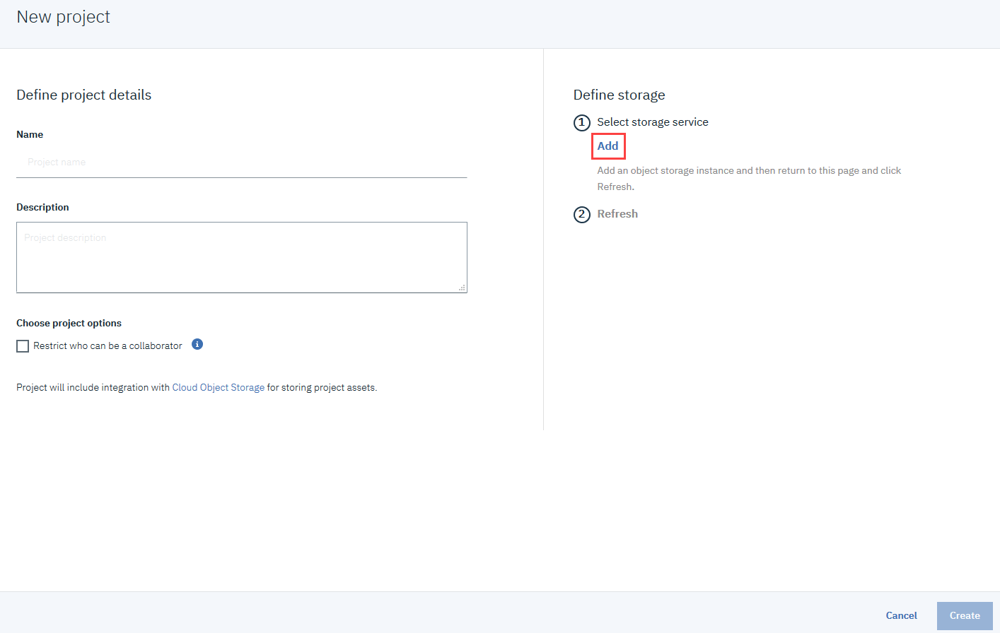

Effort: 20 min
In this lab, you will import a notebook in Watson Studio and perform the Classification
After completing this lab, you will be able to:
Import a Notebook in Watson Studio
Solve Classification Problem
If you have not created a Watson service before proceed with Step 1, otherwise go to Step 2:
For this project, you will use your IBM Watson Studio account from the previous chapter.
Go to the IBM Cloud Watson Studio page:
You will see the screen in the figure below. Click the icon in the red box:
Then click Watson, as shown below:

Then click Browse Services.
Scroll down and select Watson Studio - Lite.
To create a Watson service using the Lite plan, click Create.
Now click Get Started.
After creating the service continue with Step 2.
Go to the IBM Cloud Dashboard and click Services.
When you click on Services, all your existing services will be shown in the list. Click the Watson Studio service you created:
Then click Get Started.
Step 3: Creating a Project
Now you have to Create a project.
Click on Create a project:

On the Create a project page, click Create an empty project
Provide a Project Name and Description, as shown below:
You must also create storage for the project.
Click Add

On the Cloud Object Storage page, scroll down and then click Create.
In the Confirm Creation box, click Confirm.
On the New project page, note that the storage has been added, and then click Create.
After creating the project continue with Step 3.
You need to add a Notebook to your project. Click Add to project.
In the list of asset types, click Notebook:

Note: Select the default Python as selected language.
On the New Notebook page, enter a name for the notebook, and then click From URL.
Copy this link: Click here
Paste it into the Notebook URL box, and then click Create Notebook.

You will see this Notebook:
| Date | Version | Changed by | Change Description |
|---|---|---|---|
| 2020-11-18 | 2.1 | Lakshmi Holla | Updated the screenshot |
| 2020-09-05 | 2.0 | Malika Singla | Updated the screenshot |